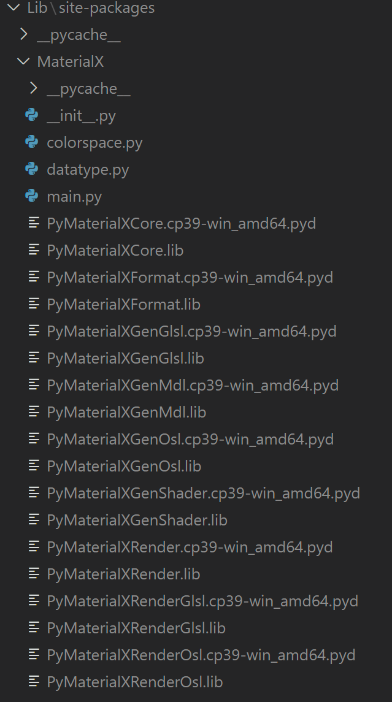
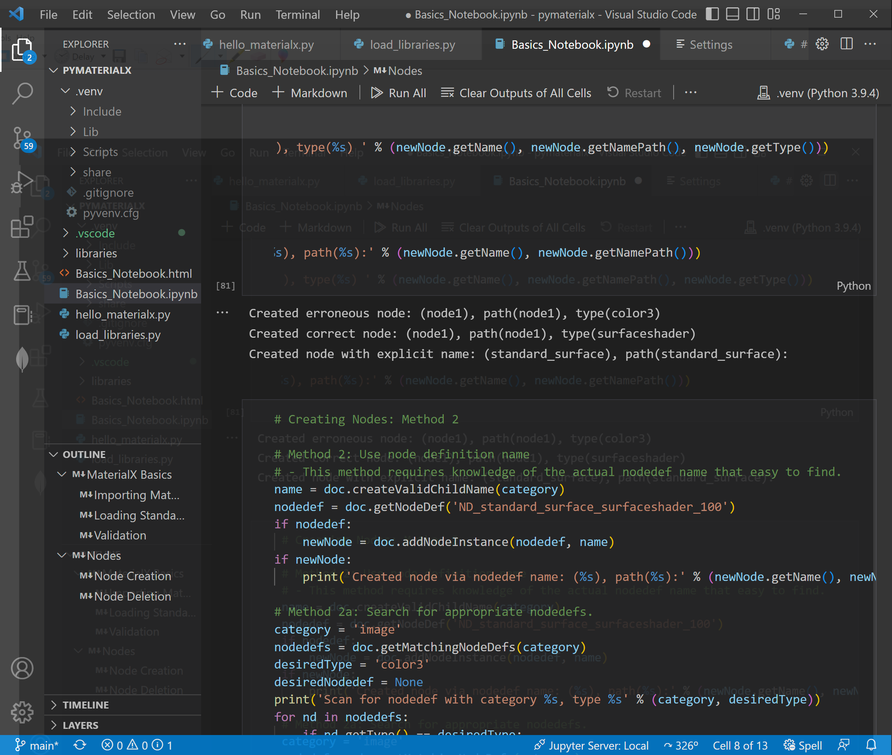
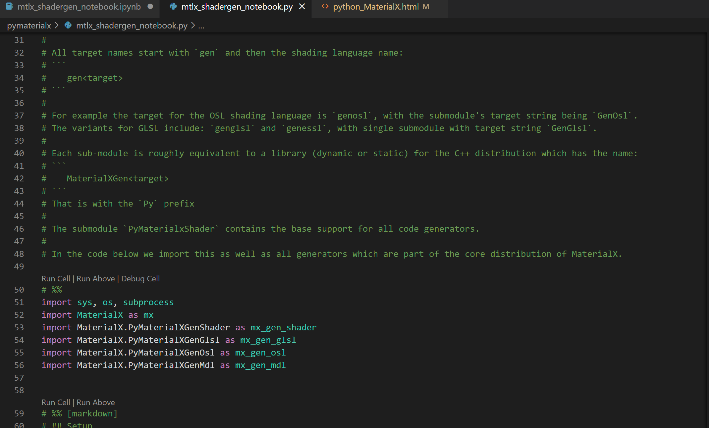

Python MaterialX
The MaterialX distribution comes with a set of Python sub-modules for editing documents, code generation, and rendering. The sub-modules correspond to the C++ libraries which also ship releases.
Users can download releases from here or use custom builds. At this time of writing, 1.38.7 is the minimum required version.
For working locally with MaterialX, Visual Studio Code and a basic understanding of Python is assumed. Within this site, various examples will be used.
Virtual Environment Setup
The following basic requirements are:
- Installation of a version of Python which is compatible with the version used to produce the MaterialX modules.
- Installation of the VSCode Python extension with the interpreter referencing the installed version.
- Setup of a virtual environment following the instructions found here. Basically:
-
⌘/Ctrl+Shift+Pcan be used to run the commandPython: Create Environment. - Choosing to create a virtual environment (vs a
Condaenvironment), (Again choose the appropriate Python interpreter).
-
Once setup a .venv folder will be created within the workspace. Under this Python packages can be added or removed as needed. To this the MaterialX modules need to be added.
Adding MaterialX Modules
We will use a simple example file called hello_materialx.py. Add this file to your workspace and attempt to run it.
Running this file will return an error if the MaterialX modules are not added yet.
import MaterialX as mx
ModuleNotFoundError: No module named 'MaterialX'
At the time of righting MaterialX is not available to download and install
using
pip (PySide),
and thus must be installed
manually. The easiest way to do this is to go where MaterialX is installed
and run the local
setup from within the workspace terminal. For example go to:
<install location>/python
and run the setup script
python setup.py install
This will add the MaterialX modules to the virtual environment under .venv/Lib/site-packages. The modules installed will depend on the ones found in the installation area.
Other dependent packages can be added using pip or other means
as necessary.
Import Example
Importing MaterialX will include all sub-modules. This differs from
C++ where individual sub-modules can be loaded.
Shown below is how to import MaterialX with the module name mx.
import MaterialX as mxAt a minimum a document must be created as all operations are based on documents.
To test that the environment works properly the test example creates a document and checks the version of MaterialX.
doc = mx.createDocument()
print('Hello MaterialX (Version %s)' % doc.getVersionString())
Minimal "Useful" Example
To do any useful operations, the standard MaterialX libraries need to be loaded. The load_libraries.py example shows this minimal setup.
Note that the environment variable MATERIALX_SEARCH_PATH can be set to the appropriate search paths to find libraries and include files. Programmatically the getEnvironmentPath function can be used to retrieve this value.
import MaterialX as mx
# Load in libraries
libraryPath = mx.FilePath('libraries')
stdlib = mx.createDocument()
searchPath = mx.FileSearchPath()
libFiles = mx.loadLibraries([ libraryPath ], searchPath, stdlib)
# Create main document and import the library document
doc = mx.createDocument()
doc.importLibrary(stdlib)
# Print out the names of the library files loaded
for libFile in libFiles:
print('Loaded library file: %s' % libFile)
Note that the "standard" libraries are in the
libraries folder in
the installation location. The key interfaces used are:
- the
loadLibrariesutility to create a library document. - the Document
importLibrarymethod to import the libraries into a working / main document.
Learning Notebooks
A series of Jupyter learning notebooks is in progress. For now only local usage has been validated. Hosting of notebooks is under investigation with a possible target being Google Colab.
Each assumes a Python environment and the installation of the Python libraries for MaterialX. If using the notebooks in VSCode, Jupyter needs to be set up. See here for more information.
For those which may not have access to the execution environment or if to simply read the noteeook, the results of executing the notebooks are provided in the Examples page. These are generated directly from the sample notebooks.
Available Notebooks
A Python file (with markdown), a notebook and a link to remote execution of
the notebook are provided.
Note that it is possible to start with the Python
itself and convert to a notebook in VSCode or export from a notebook to Python.
| Notebook | Download Python (py) | Download Notebook (ipynb) | View on Colab |
|---|---|---|---|
Basics
|
|
|
|
ShaderGen
|
|
|
|
Below is a snapshot of Visual Studio code with the "Basics" notebook loaded.
Below is a snapshot of Visual Studio with Python and Markdown embeeded.
